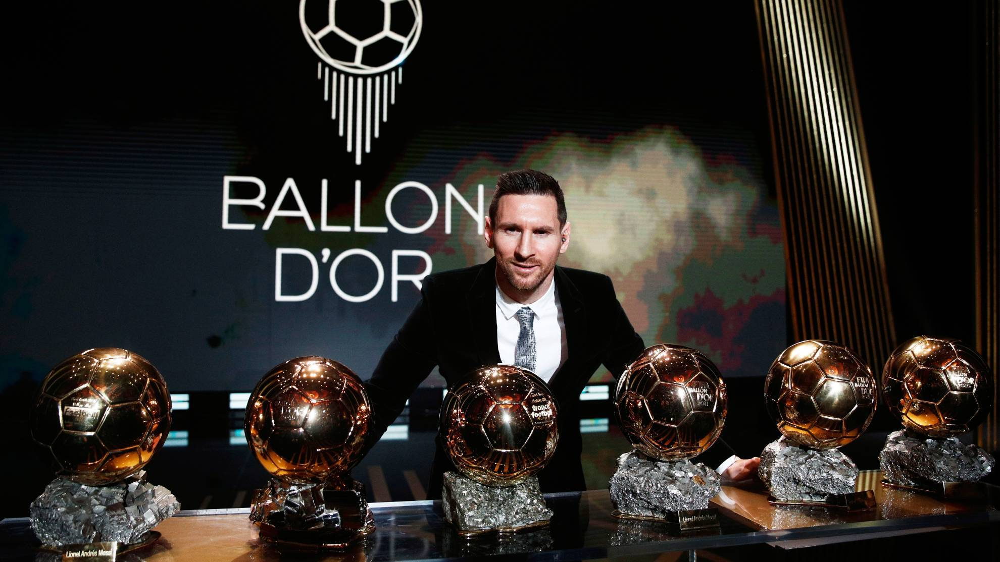

Ir Argentīnas galvenā futbola kluba Paris Saint futbolists, uzbrucējs. Argentīnas izlases kapteinis. Rezultatīvākais spēlētājs Spānijas, " Barcelona " un Argentīnas izlases čempionāta vēsturē. Atzīts par vienu no visu laiku labākajiem futbolistiem. Septiņkārtējs Zelta bumbas ieguvējs, seškārtējs Zelta zābaks. Barselonas akadēmijas absolvents, kopā ar klubu ir izcīnījis desmit Spānijas līgas titulus, četrus UEFA Čempionu līgas, septiņus Spānijas kausus, astoņus Spānijas Superkausus , trīs Eiropas Superkausus un trīs klubu Pasaules kausus . Francijas čempione ar Paris Saint-Germain .
